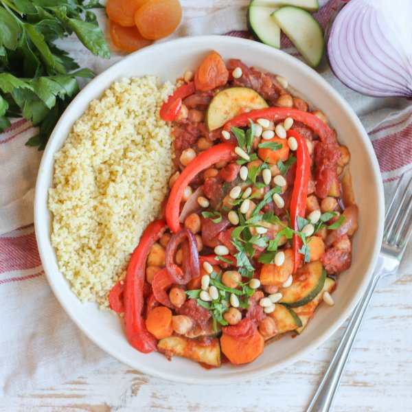

Moroccan Chickpea, Apricot, Bell Pepper & Zucchini Curry with Couscous

Nutrition (per serving)
665.5 kcalCalories
27.2 gProtein
107.4 gCarbs
20 gFat
Full nutrition table
| Calories | 665.5 kcal |
| Total fat | 20 g |
| Saturated fat | 2.4 g |
| Trans fat | 0.1 g |
| Cholesterol | 0 mg |
| Sodium | 423.3 mg |
| Carbohydrates | 107.4 g |
| Fiber | 24.4 g |
| Sugars | 29.4 g |
| Protein | 27.2 g |
| Potassium | 1744.5 mg |
| Calcium | 237.5 mg |
| Iron | 7.4 mg |
| Vitamin A | 1423.4 IU |
| Vitamin C | 148.2 mg |
| Vitamin D | 0 IU |
Cookware
Ingredients
- 2 mediumcarrots
- 32 fl ozchicken or vegetable broth
- 2 (14.5 oz) cansdiced tomatoes
- 16dried apricots
- 2 (15 oz) cansgarbanzo beans (chickpeas)
- 4 clovesgarlic
- 1 small bunchItalian (flat-leaf) parsley
- ¼ cuppine nuts
- 2red bell peppers
- 1 mediumred onion
- 4 tbsptomato paste
- 1 cupwhole wheat couscous
- 2 mediumzucchini squash
- brown sugar
- cayenne pepper
- chili powder
- cinnamon, ground
- extra virgin olive oil
- garam masala
- salt
Steps
- In a medium saucepan, bring broth to a boil. Once boiling, remove from heat, add couscous, and stir to combine. Cover and let stand for 10 minutes, then fluff with a fork.16 fl oz (2 cups) chicken or vegetable broth
1 cup whole wheat couscous - Meanwhile, wash and dry the fresh produce.2 medium carrots
2 red bell peppers
2 medium zucchini squash
1 small bunch Italian (flat-leaf) parsley - Peel, trim, and slice carrots crosswise into ¼-inch thick rounds. Place in a medium bowl.
- Trim, seed, and thinly slice bell peppers. Add to the bowl with the carrot.
- Peel, halve, and slice onion crosswise into thin half-moons. Peel and mince garlic. Add both to the bowl.1 medium red onion
4 cloves garlic - Preheat a large skillet over medium-high heat.
- Once the skillet is hot, add oil and swirl to coat the bottom. Add the veggies and spices; cook, stirring occasionally, until the veggies start to soften, about 5 minutes. (Reserve bowl for the next step.)2 tbsp extra virgin olive oil
1 tbsp chili powder
1 tbsp garam masala
1 tsp salt
¼ tsp cinnamon, ground
¼ tsp cayenne pepper - Meanwhile, trim and halve zucchini lengthwise, then slice crosswise into ¼-inch thick half-moons. Place in the reserved bowl.
- Roughly chop apricots and add to the bowl with the zucchini.16 dried apricots
- Drain and rinse chickpeas in a colander.2 (15 oz) cans garbanzo beans (chickpeas)
- Once the veggies start to soften, add zucchini, apricots, chickpeas, tomatoes, broth, tomato paste, and sugar to the skillet. Stir to combine the curry and bring to a boil over high heat.2 (14.5 oz) cans diced tomatoes
16 fl oz (2 cups) chicken or vegetable broth
4 tbsp tomato paste
4 tsp brown sugar - Once boiling, reduce heat to medium-low, and cook, stirring occasionally, until veggies and chickpeas are tender, 10-15 minutes.
- Meanwhile, shave parsley leaves off the stems; discard stems and mince the leaves.
- When the curry is done, remove from heat, add half of the parsley, and stir to combine. (Reserve remaining parsley for serving.)
- To serve, divide couscous and curry between plates or bowls. Top with reserved parsley and pine nuts. Enjoy!¼ cup pine nuts